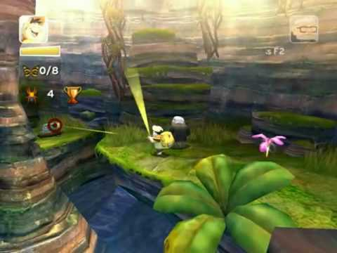
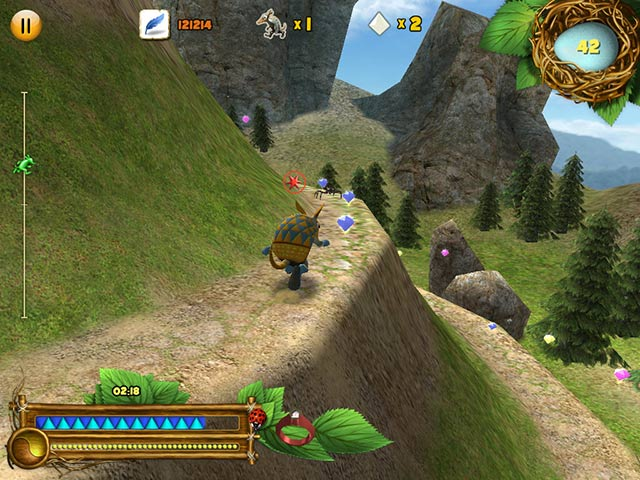
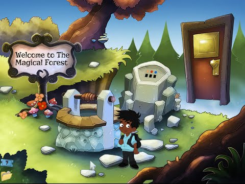

AVENTURA
Son videojuegos en los que el protagonista debe avanzar en la trama interactuando con diversos personajes y objetos, este género de juego se desarrolla siguiendo un guión donde el jugador deberá tomar decisiones, resolver acertijos, explorar el escenario, investigar, etc. llevándolo por distintos niveles ya sean 3D o 2D con distintos retos, muchos de estos lógicos. Caracteristica peculiar
Una característica muy peculiar de este tipo de género es que siempre tienen un jefe en los niveles o jefe de nivel, que no es más que un personaje virtual que debe ser superado para poder continuar la historia que guiará y motivara al videojugador en el transcurso del juego hasta un final que puede variar dependiendo de dichas decisiones. Genero de Aventura 
Si bien es cierto que en el pasado el género aventura comprendía una gama de subgéneros y estilos más amplia aún si cabe que la que con el paso del tiempo y hasta la actualidad se ha ido consolidando, en la que se podían incluir juegos de lo más variados, muchos de los cuales hoy día consideraríamos pertenecientes a otros estilos como plataformas, rompecabezas e incluso acción, sirviendo en cierto modo como género abanico, para una época en la que apenas si se había empezado a desarrollar algunas fórmulas, sin que estas estuvieran aún lo suficientemente desarrolladas como para reclamar nuevos géneros a los que pertenecer por derecho. 
El género de aventura era absolutamente popular a finales de los años 1980 y a principios de los años 1990, y muchos consideraban que estaba entre los géneros más avanzados técnicamente. Mientras que pocos desarrolladores continúan produciendo videojuegos de aventura, todavía hay algunos que se publican, y el género de aventura ha transferido algunos elementos a otros géneros. Los videojuegos que fusionan elementos de aventura con elementos de videojuegos de acción a veces son referidos como videojuegos de aventura (un ejemplo popular es la serie de Castlevania de Konami). Los puristas de los videojuegos de aventura consideran esto como incorrecto y llaman a estos híbridos como videojuegos de acción-aventura o simplemente aventura de acción. Han sido criticados 
Los videojuegos de aventura han sido criticados porque algunos adoptan la actitud de "el fin justifica los medios". En tales casos, el jugador debe obtener un artículo de alguien reticente a cooperar, y la única manera de progresar es distraerlo para poder robar el artículo. En contraste, sin embargo, muchos videojuegos de aventura tienen búsquedas o misiones que impulsan al jugador a ayudar a otros; por ejemplo, ayudar a un espíritu atormentado que busca ser liberado, liberando a un animal atrapado, o realizando de otros modos actos benévolos, actos abnegados o desinteresados. Con frecuencia, estos personajes recompensarán al jugador posteriormente en el juego, a menudo en un momento crítico.. Accion-Aventura
Los videojuegos de acción-aventura mantienen un ritmo más veloz que los videojuegos de aventura "pura y dura", e incluyen retos tanto físicos como conceptuales. A pesar de que se necesitan acciones que activen los reflejos (a menudo relacionadas con el combate o el evitar de este), la jugabilidad respeta algunos conceptos del género aventura (recolección de objetos, exploración del entorno e interacción con el mismo, solución de acertijos). Si bien los controles son al estilo arcade (movimiento del personaje, pocos comandos de acción) hay un objetivo final más allá del alto puntaje. Este tipo de videojuegos a veces son muy similares con los videojuegos de rol.
Es importante señalar que los videojuegos de aventura nunca tienen un elemento de acción importante, limitando la acción a minijuegos u otras pequeñas secuencias. Los videojuegos de rol tienen, por definición, elementos de los juegos de rol de papel, como "puntos de experiencia" y otros elementos de jugabilidad estadísticos. Es por esto que los videojuegos de la serie Metroid corresponden al género acción-aventura.